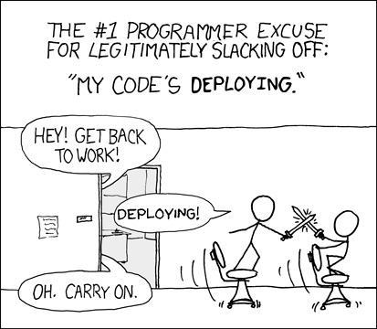

 Maintaining a Node.JS OSS package and getting more free time Alexandru Badiu Development Lead @ BEN Group Cofounder @ Drupal Romania You'll need Accounts on GitHub and NPM Git and NodeJS installed This session Code quality Automating workflows Code quality Code style Unit tests Code coverage Automating workflow Meaningful commits Semantic versioning Automatic release Thank you! andu@ctrlz.ro @voidberg